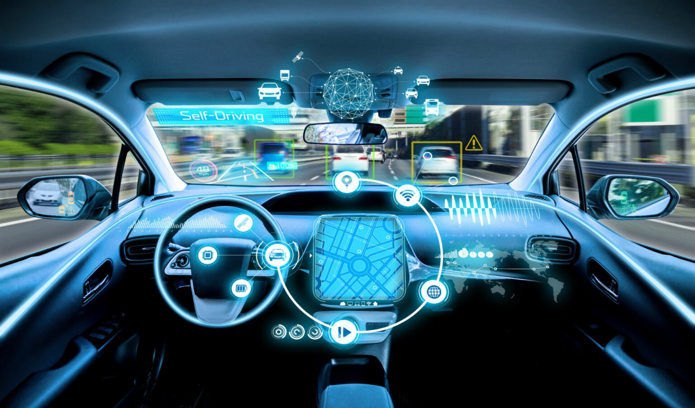
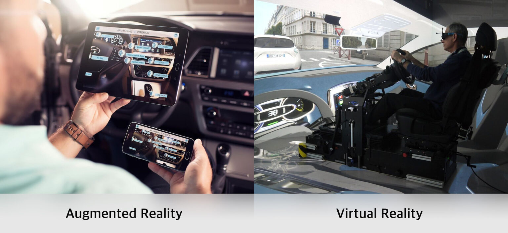
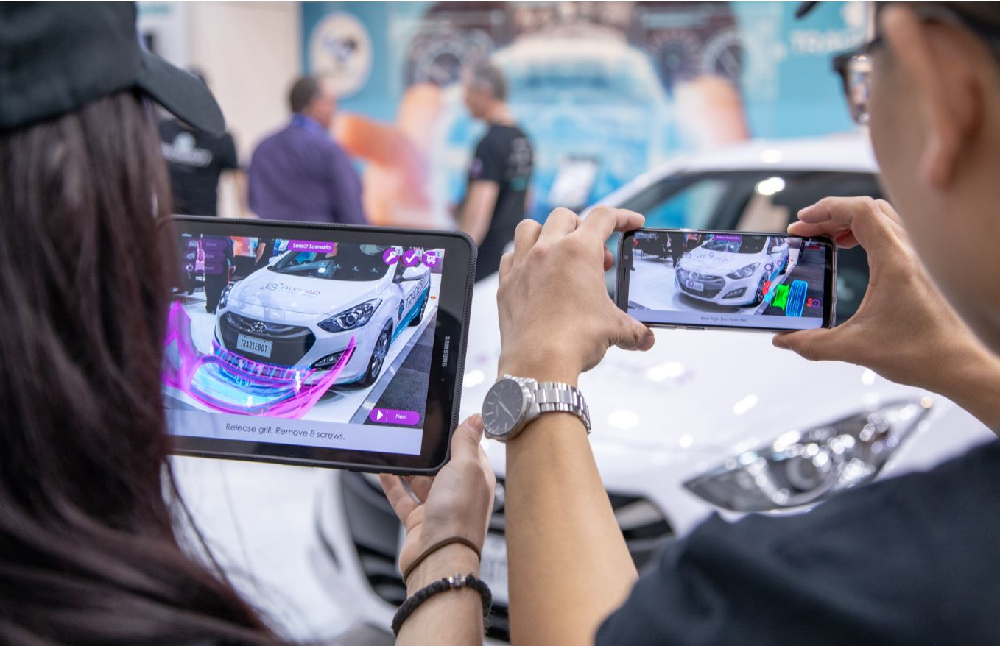
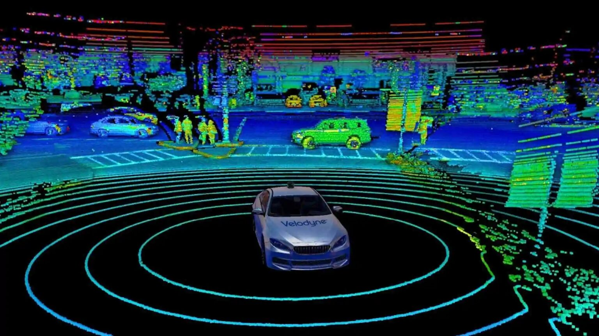

Vehicle Augmented Reality

What is Augmented Reality?
Augmented Reality refers to an interactive experience that combines the physical world with digital content. A computer enhances real-life objects by adding effects or displaying features unavailable in our current reality.
In the automotive industry, AR refers to the process of working with 3D models or enhancing the experience of maintaining a vehicle. It can be used to improve test drive prototypes by showcasing safety features visually or to create scenarios to test those safety features.
AR applications could be used in several stages of the industry – starting from the design and reshaping processes and streamlining them. These applications can be applied to older models and to compare and examine the possibility of new designs before devoting resources to a new manufacturing process. Similarly, AR can be used in manufacturing. Some are already using AR applications to test how a vehicle can perform in multiple scenarios. Moreover, AR applications can enhance customers’ experience as an owner – in after-sale services.

How is Augmented Reality Different From Virtual Reality?
AR is different from VR in terms of the technology applied and devices used. VR creates an alternate reality that the user can experience without input from real life, so the whole experience is digitally controlled. In contrast, AR incorporates digitally-created 3D objects and 2D imagery into real life, where the user remains present in the physical world. AR has a bigger impact on the automotive experience – the compound annual growth rate of AR in the car market is expected to increase from 4.51 billion in 2021 to 14.44 billion in 2028.
Stakeholders like investors and regulatory bodies can see the potential of cars and how they work using 3D models. Stakeholders can also monitor the manufacturing and production process and see if the company is following all compliance rules and guaranteeing the safety of potential customers.
Types of AR Applications

Marker-Based Application
Marker-based AR applications (also known as image-recognition or image-based AR) use markers that a camera can recognize to activate the augmented experience. Users can manipulate the appearance of physical reality and enhance it using the created digital content on a mobile device or PC.
Augmented Reality car showroom applications are examples of using marker-based AR. Using this technology, marketing teams can show the potential of a new product or highlight the features of a new vehicle model with visual explanations.
Marker-based AR can also be used for training purposes. For example, designers and engineers can use it to make sure that they follow the proper instructions and schedule when it comes to the execution. A vehicle’s Head-Up Display (HUD) can use marker-based AR applications that calculates valuable data about the objects that surround a vehicle and displays this information that the driver can refer to. Using this information enables the driver to navigate and drive the car more safely.

Sensor-Based Application
Sensory-based AR applications give the user the illusion to be present in an alternate reality. This technology relies on creating multimodal, visual, and audible sensory stimuli to make the user feel that they are present somewhere else. In the automotive industry, sensory-based AR can be used to test-drive a new vehicle before it is produced or test the safety features of a new model by simulating a dangerous situation.
The LiDAR (Light Detection and Ranging) safety system is a great example of sensory-based Augmented Reality. It emits light particles that hit nearby objects and people, and then the system shows a digital image of these objects on a display. It also calculates the distance between these objects and the car and accordingly estimates the time of projected collision.